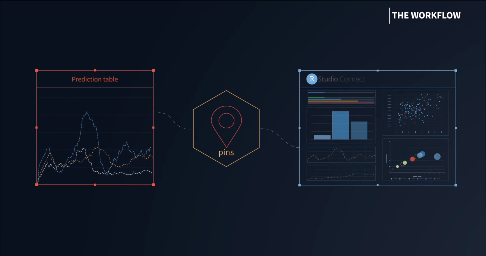
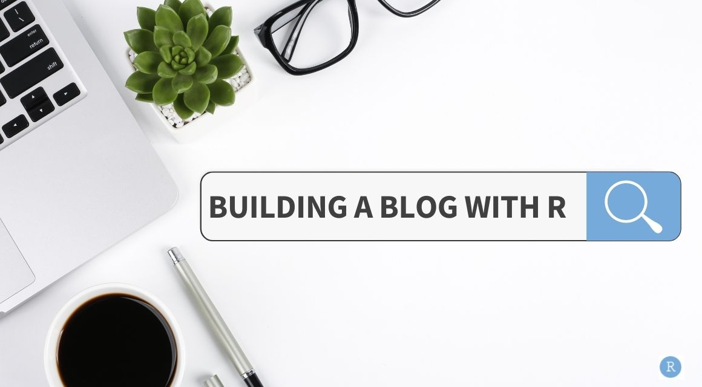
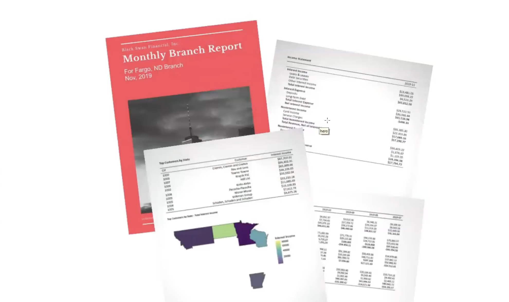
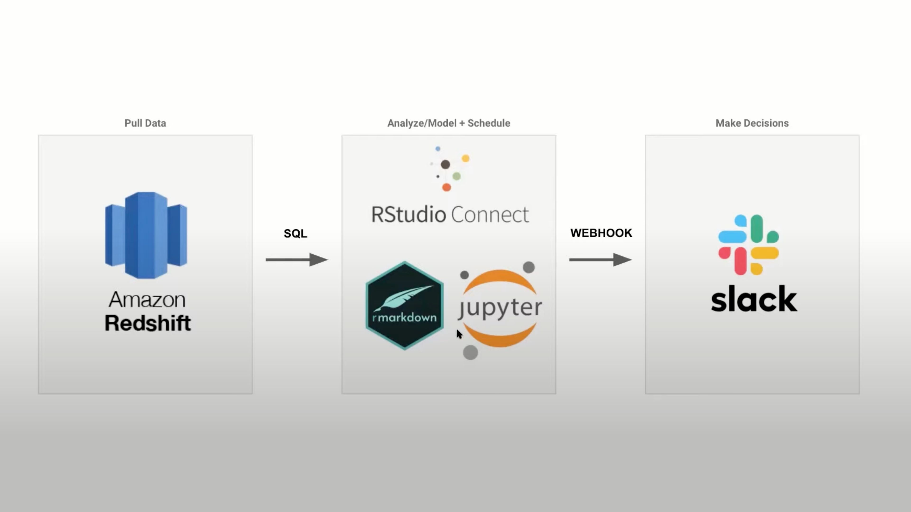
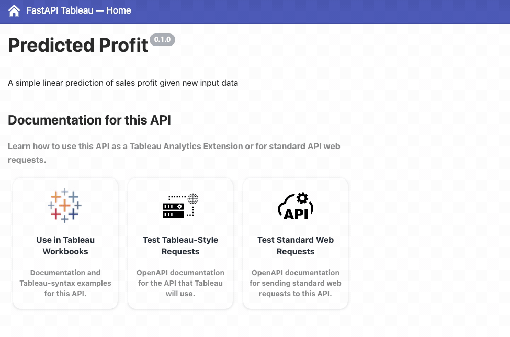
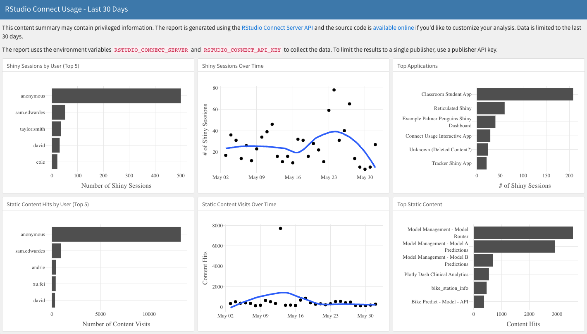
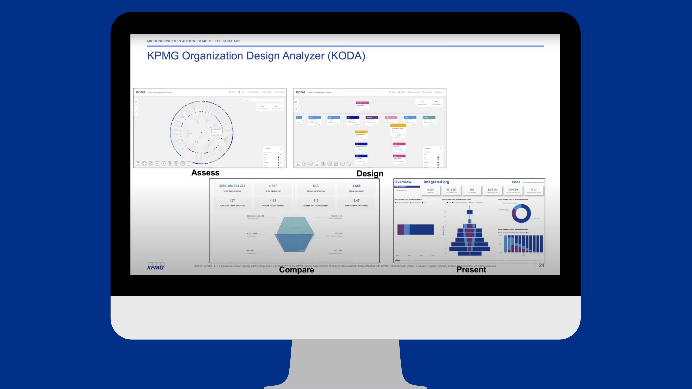

2022-06-28
In speaking with the community, I hear about so many different ways that teams are using RStudio Connect and providing value across their companies.
On Twitter I posted 10 ways RStudio Connect can give your data science team superpowers and thought it’d be helpful to share here as well.
I’d love to hear about all the other ways your team is using RStudio Connect and about the cool things you are building too! If you’re interested in sharing your work at a meetup as well, please consider filling out the speaker submission form.
How many have you done?
You can also replace any of the examples above with Python because RStudio Connect supports Jupyter, Flask, FastAPI, Dash, Streamlit, Bokeh, mixed R/Python content with reticulate, Python pins, etc.
Shiny makes it easy to build interactive web applications straight from R.
Here’s an example of how Microsoft’s data scientists use Shiny and own the model development life cycle from data ingestion, model development, model deployment to visualization of insights with Paul Chang.
The pins package publishes data, models, and other R objects, making it easy to share them across projects and with your colleagues. Pins can be automatically versioned, making it straightforward to track changes, re-run analyses on historical data, and undo mistakes.
Here’s an example of how the City of Reykjavík pins models that are used in their Shiny app to show the capacity of pools with Hlynur Hallgrímsson.

Your internal data science community helps each other learn, collaborate, and share. However, you may not have a central place for your assets, making it difficult for members to find information from the past or know where to save their work.
A blog can be a lightweight way to consolidate resources, events, and other information for your internal data science community. Here’s an example of deploying a blog to RStudio Connect with Isabella Velasquez.

One of the many benefits of working with R Markdown is that you can reproduce analysis at the click of a button. This makes it very easy to update any work and alter any input parameters within the report.
Parameterized reports extend this one step further, and allow users to specify one or more parameters to customize the analysis. This is useful if you want to create a report template that can be reused across multiple similar scenarios.
Here’s an example of creating an income statement for a group of theoretical office branches with parameterized R Markdown with Brad Lindblad.

Serving stakeholders data in the moment they need it in an environment where they are already talking about business performance can help in democratizing information, especially when end-users are experiencing dashboard overload.
Here’s an example of how Campaign Monitor serves individualized insights directly to stakeholders with R, Python, and RStudio Connect with Matthias Mueller.

How do you make sure your audience finds what they need on RStudio Connect without paging through the dashboard, remembering the right search terms, or bookmarking every content item you share?
After deploying many pieces of related content, how do you share them as a cohesive project?
Here’s a walkthrough of using connectwidgets to build your ideal showcase of data products with Kelly O’Briant.
Here’s an example of how Snap Finance ensures a reproducible development workflow with a Shiny dashboard framework with Alan Carlson.
Using their internal package, the team is able to build dashboards the same way, reducing tech debt and simplifying code review. This allows their team to bring on new developers and have them become almost instant contributors. With standardization, their developers are spending more time actually developing instead of spending time spinning up a Shiny framework.
RStudio Connect includes support for Tableau Analytics Extensions, which provide a way to create calculated fields in workbooks that can execute scripts outside of the Tableau environment. This RStudio Connect integration enables you to create R or Python HTTP API extensions for use across all your Tableau workbooks.
Compared to existing methods for integrating R and/or Python in Tableau, integration via APIs hosted on RStudio Connect provides better security and dependency management. James Blair led us through a demo of this in the meetup recording here.

The RStudio Connect Server API provides easy access to your server’s instrumentation data from when users visit your server. As a publisher or administrator, you have access to these data: who logged in, when they logged in, what they looked at, and how long they spent on that piece of content.
With this, you can extend Connect and visualize advanced usage metrics that help answer important questions and focus your data science work. Here’s a walk-through & resources to get started with Cole Arendt.

As data science teams—and their applications—grow larger, teams can experience growing pains that make applications complex, difficult to customize, or challenging to collaborate across large teams.
You can use the Plumber package to deploy APIs to RStudio Connect as part of a microservices architecture that allows your team to work with front-end development teams using their preferred framework (e.g., React, Angular, Vue).
Here’s an example of how KPMG uses microservices to scale R-based applications across the enterprise.

You can also replace any of the examples above with Python because RStudio Connect supports:
* Jupyter Notebooks
* Flask applications
* FastAPI applications
* Plotly Dash applications
* Streamlit applications * Bokeh applications * Mixed R/Python content with the reticulate package
* Python pins
We’d love to highlight your Python use cases too! If you’re interested in sharing your work at a meetup, please consider filling out the speaker submission form.
If you haven’t had a chance to try RStudio Connect before, you can request an evaluation here.
If you need help convincing your team that ️you should have these superpowers too, check out the RStudio Champion Site for resources to help build a business case, grow your internal data science community, work with IT, and more.